Root_A — 60×155, 10 colors
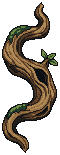
Review candidate · 10 PixelLab generations · Stage 2 and animation not started · No merge
Thick curling wood now carries the board-side structure. The approved frame ivy remains as the secondary greenery. Existing lower boughs and stones are preserved for the later stage.
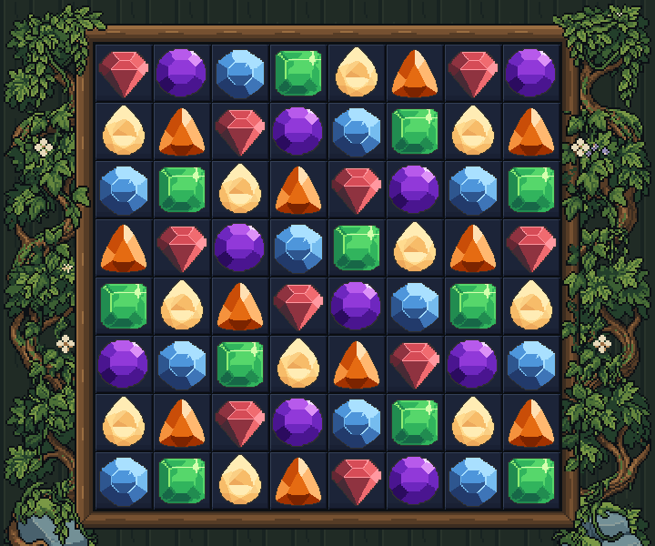
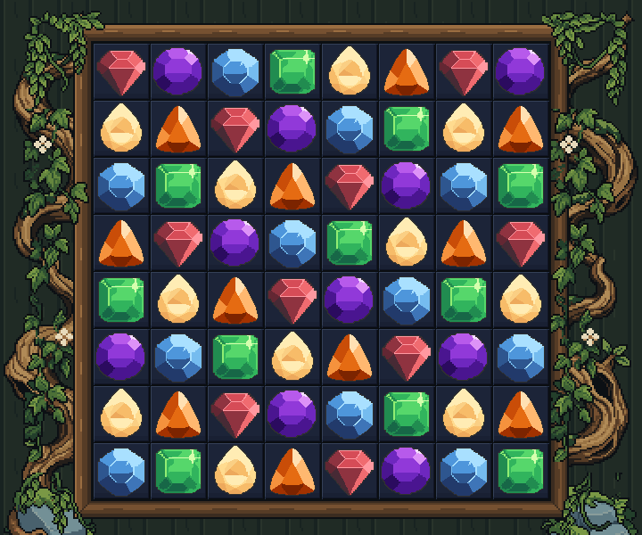
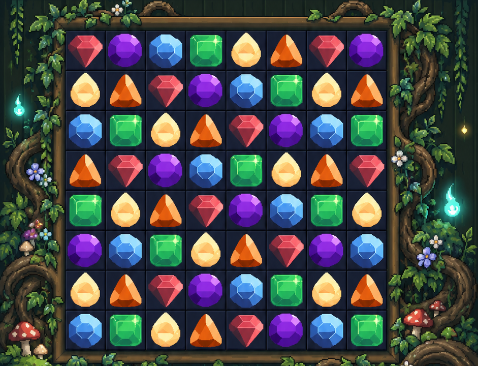
Comparison panels fit their columns. Native assets below are displayed at 1× and an integer enlargement.
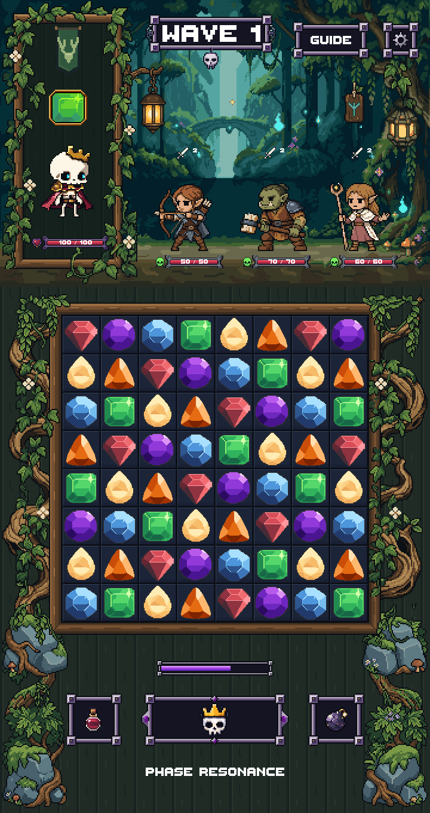

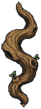
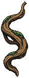
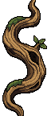
64×144; native 1×
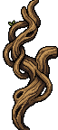
64×144; native 1×
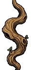
64×144; native 1×
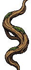
64×144; native 1×
The raw tips touched the canvas. LibreSprite cleanup adds complete tapered caps, transparent clearance and deliberate bark-color ramps. No drawing resampling. Raw 1 remains unselected source history.
Unity compilation and render checks passed at 720×1360 / 1440×2720. All 296 prior image bindings and rectangles, 1,680 source files and locked pixel regions are preserved. These are static Unity art-review screenshots, not live combat or device tests.